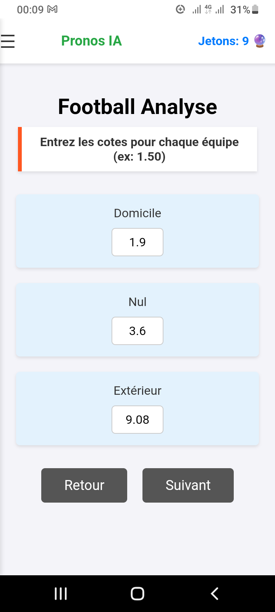
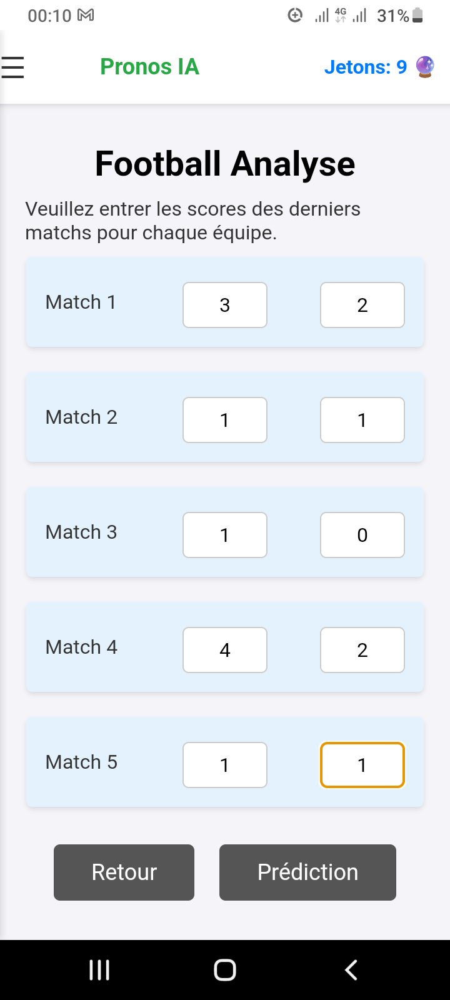
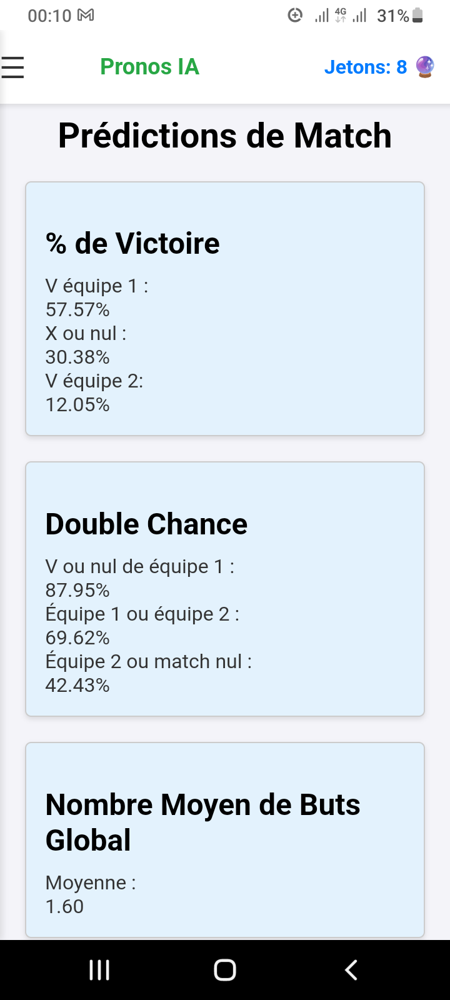

À propos



Analyzer Cotes Pro est une application avancée pour analyser les cotes sportives et obtenir les meilleures prédictions en temps réel. Avec une interface intuitive et des outils performants, cette application vous aide à maximiser vos chances de succès en paris sportifs.
TÉLÉCHARGEZ l'application
Retour au site